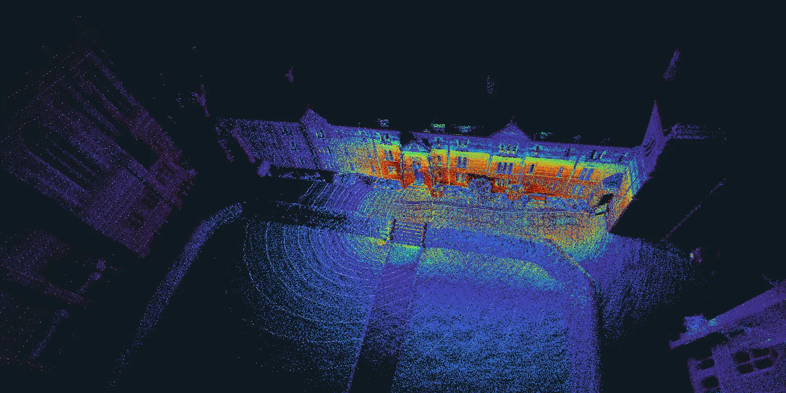
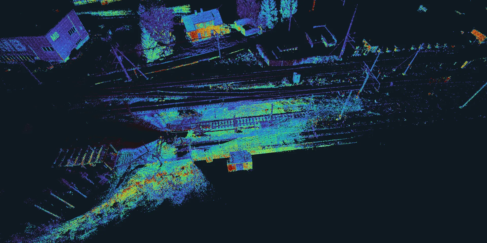
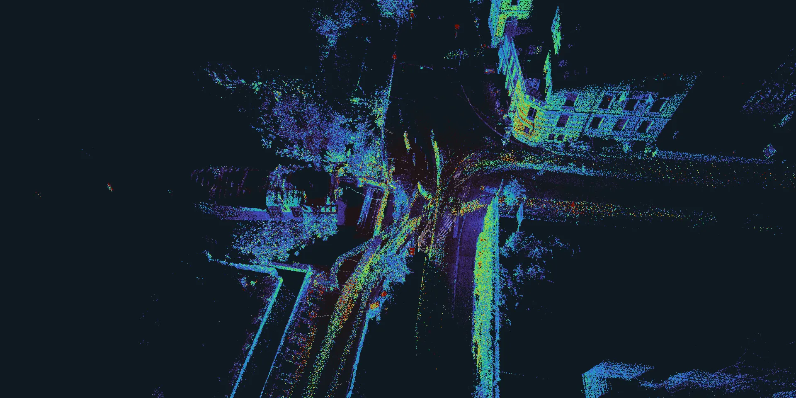
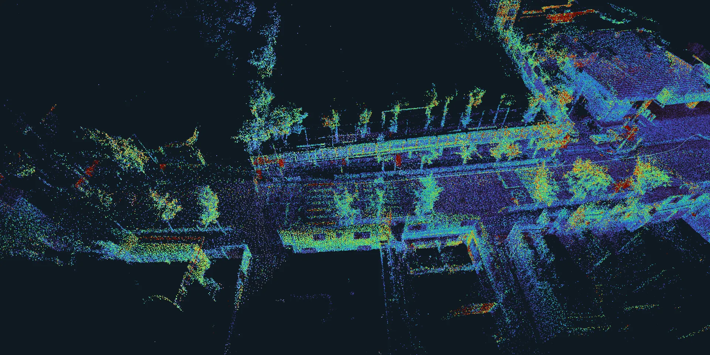

Pelorus
Resource-aware Lidar-Inertial Odometry
Live Presets
The first seconds of public datasets with Lidar and IMU. Pelorus estimates the motion directly in your browser and builds the map as the scans come in.
Run your own recording
Load a ROS 2 MCAP bag with a PointCloud2 topic and ideally an
Imu topic. Everything is running locally inside this tab, nothing leaves your device. Start the
recording with the sensors standing still for a few seconds.